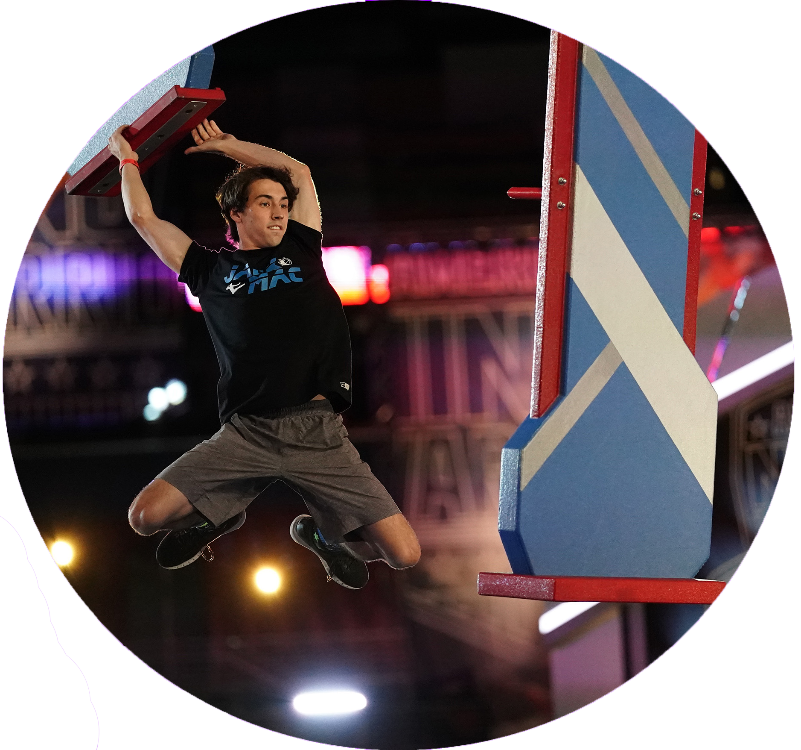
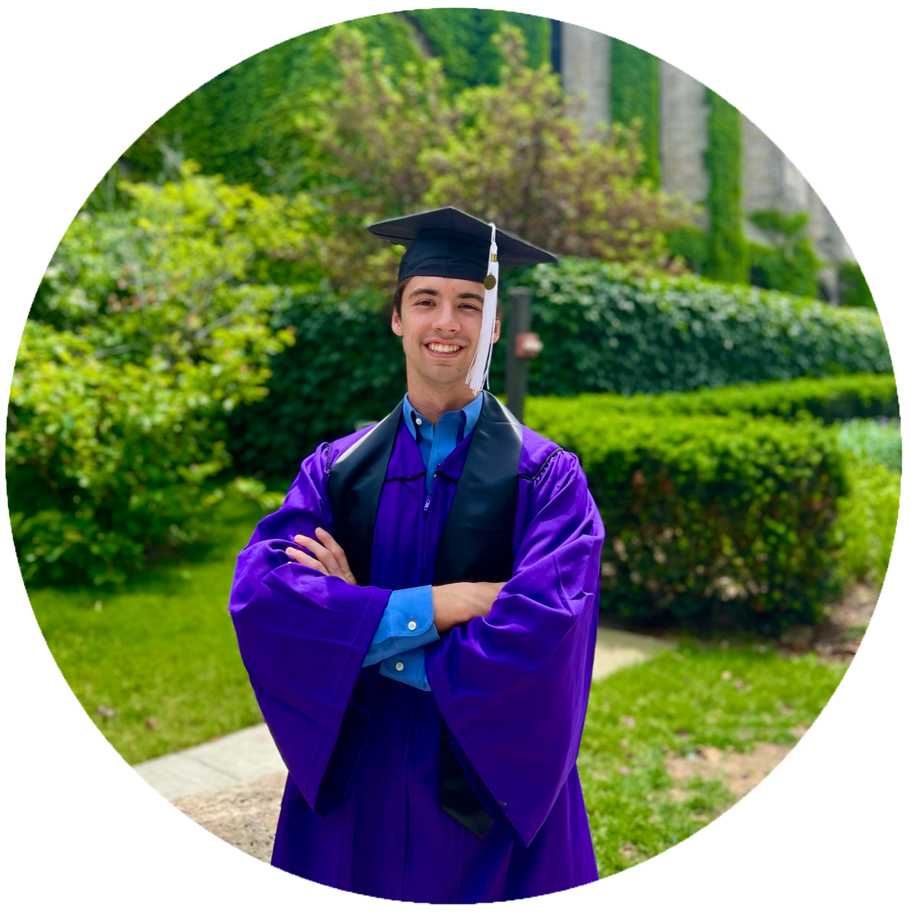

I am a software engineer and more...
 | 1. HTML/CSS | 2. Javascript | 3. Python | 4. C++/C | |
| 5. C# | 6. Unity | 7. Xcode | 8. Swift | 9. Photo/Video Editing |
I am always striving to gain new skills and improve the ones I have. I never want to be stagnant and am always pushing myself to reach new goals.
I created this app to help you to easily track and save your golf scores with friends and family.
| 1. Swift |
| 2. Xcode |
I created this app to help visualize the spread of a disease in a fun and interactive way. I used the Unity and C# to bring this simulator to life.
| 1. C# |
| 2. Unity |
This program uses python to scrape and parse together recipes given by a url to allrecipes.com. The program can then convert the recipes to similar recipes, but with a transformation. For example, converting a recipe to a vegetarian version.
| 1. Python |
| 2. Leadership |
| 3. Teamwork |
This is a video game built from the ground up with Unity and C#. I worked with two teamates to bring the game to life. It is a fast paced and challenging shooter. Not for the faint of heart, beware this game is NOT for everyone.
| 1. Unity |
| 2. C# |
| 3. Strong communication and teamwork |